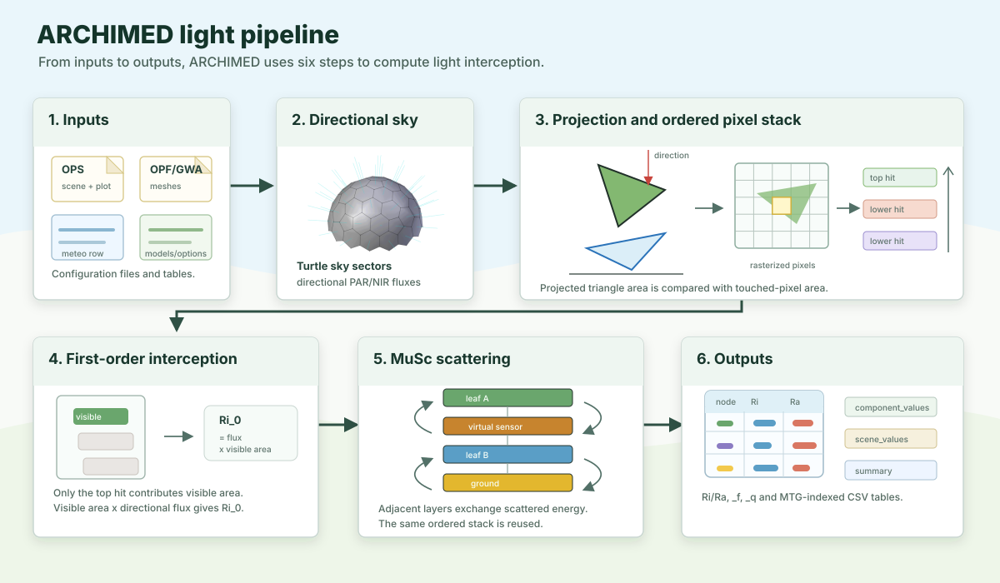

Pipeline Overview
This page gives the high-level mental model of one ARCHIMED light simulation step. If you want the mechanics behind projection and scattering, continue with:
The Big Picture
At each meteo step, ARCHIMED estimates how much radiation each scene component receives and absorbs. The computational pipeline is illustrated in the figure below, which shows the six steps of one simulation step.

The numbered panels in the figure are the six steps narrated below: inputs, directional sky, projection and ordered pixel stacks, first-order interception, MuSc scattering, and outputs.
What The Model Represents
The model is surface-based:
- leaves, stems, soil, sensors, and other objects are represented as triangle meshes
- light propagates along a finite set of directions
- visibility is computed by projecting the scene onto the plot
- first-order interception is computed using the visible projected area of each component and a pixel stack of hits along each direction
- multiple scattering then redistributes a fraction of the intercepted energy at the component level, using the same pixel stack information
One Simulation Step, Narrated
1. Inputs
Step 1 gathers the inputs shown in the first panel: scene and plot configuration, geometry files, one meteo row or an equivalent sky state, and model/options tables. The radiative forcing includes:
- date and time interval (i.e. duration of the meteo step)
- site latitude
- shortwave forcing, either measured or computed from the sun position and clear-sky irradiance
If the meteo duration is long, the radiative state can be subdivided internally using radiation_timestep_minutes to better represent the temporal variability in sun position.
2. Directional Sky
Step 2 builds the directional sky shown in the second panel. compute_sky and build_turtle convert the atmospheric forcing (the meteo step) into:
- sun position
- direct and diffuse fractions
- directional irradiance carried by turtle sectors and, optionally, an explicit sun direction using a sky model
3. Projection And Ordered Pixel Stack
Step 3 corresponds to the projection and ordered pixel stack panel. For each direction:
- the mesh is projected onto the plot
- the projected area is rasterized into pixels
- visible hits and lower hits are ordered along each pixel stack
This step is very fast because it uses a 2D rasterization algorithm instead of a 3D ray-tracing algorithm, especially because it samples directions discretely. The ordered pixel stacks are used in the next two steps to compute first-order interception and scattering.
4. First-Order Interception
Step 4 uses the top hit of each ordered pixel stack. The visible projected area of each component is converted into intercepted power and then later into irradiance and energy. This is the Mir stage in the historical ARCHIMED terminology developed by Jean Dauzat (AMAP, CIRAD).
5. Scattering
Step 5 is light scattering. If options.scattering=true, the model reuses the ordered hit information to exchange scattered energy between adjacent layers iteratively. In other words, it reuses precomputed information from the existing ray projection to traverse the hit stack again. This is the MuSc stage in the historical terminology. This step is optional because scattering is often negligible in sparse canopies (e.g. a single plant in an open field), and it is computationally expensive. But it is important in dense canopies (e.g. a forest, a crop canopy) where multiple scattering can be significant. This computation is performed at the component level, and iteratively until the scattered energy at the scene level is below a threshold or a maximum number of iterations is reached.
6. Outputs
Step 6 writes the output tables shown in the last panel. integrate_light converts powers into the exported quantities:
Ri_*: intercepted radiationRa_*: absorbed radiation_f: fluxes or irradiances_q: step-integrated energies
The outputs can also be re-allocated into the original scene components (i.e. the MultiScaleTreeGraph), which is useful for visualization and debugging.
Julia API
Each step of the pipeline is accessible via the following functions:
sky = compute_sky(row, options)
turtle = build_turtle(options, sky)
fluxes = compute_directional_fluxes(row, sky, turtle, options)
first = compute_first_order(scene, models, turtle, fluxes, options)
scat = compute_scattering(scene, models, turtle, first, options)
budget = integrate_light(scene, models, first, scat, options; meteo_row=row)Or, in one call:
step = run_light_step(scene, models, row, options)